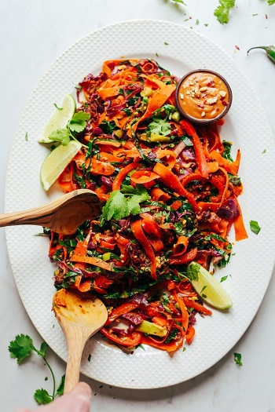

Noodle-Free Pad Thai
Original Recipe from Minimalist Baker



Prep time: 15 minutes || Cook time: 15 minutes || Serving: 2 || Rating 10/10
Ingredients
VEGGIES
- 1 Tbsp sesame oil
- 1 medium serrano pepper (seeds + stem removed, thinly sliced // omit for less heat)
- 1 small bundle green onions (ends removed + thinly sliced)
- 2 cups thinly sliced red cabbage
- 2 medium red bell pepper (cored and thinly sliced lengthwise)
- 2 Tbsp coconut aminos (or Tamari or soy sauce if not gluten free)
- 2 cups carrots (peeled and ribboned with a vegetable peeler)
- 1 head of collard greens leaves (large stems removed, stacked + thinly sliced)
- 1/2 tsp freshly grated ginger (optional)
- 1/2 tsp freshly grated turmeric (optional)
SAUCE
- 2 1/2 Tbsp nut butter (almond butter, peanut butter, sunflower seed butter, etc.)
- 3 Tbsp lemon juice
- 3 1/2 Tbsp coconut aminos (or Tamari if not GF)
- 1/2 tsp red pepper flake
- 1 1/2 Tbsp maple syrup
PROTEIN
- tofu, chicken, tempeh, beef etc.
If you add Tofu:
- 1/2 cup extra-firm tofu (excess liquid pressed out, crumbled with a fork)
- 1 Tbsp coconut aminos (or Tamari if not GF)
- 1 tsp chili garlic sauce (or 1/8 tsp red pepper flake)
- 1/4 tsp ground turmeric (optional)
FOR SERVING optional
- Fresh cilantro
- Crushed peanuts
- Red pepper flake
Instructions
- Prepare your protein source
- If serving with tofu: Add tofu to a mixing bowl and season with coconut aminos, pepper flake, and turmeric. Set aside.
- If serving with meat: cut into 1 inch pieces and set aside.
- Add all sauce ingredients to a mixing bowl. Set aside.
- Heat a large skillet over medium heat. Once hot, add oil (or water), pepper, onions, cabbage, bell pepper, and 1 Tbsp coconut aminos. Cook for 3 minutes, stirring frequently.
- Add carrots Cook for 2 minutes, stirring frequently.
- Add protein to a corner of the pan and sauté until slightly browned, stirring frequently - about 3-5 minutes.
- Add collard greens and 1 Tbsp the coconut aminos for the veggies and stir. Sauté for 2 minutes.
- Add Pad Thai sauce and freshly grated ginger and turmeric.
- Sauté over medium heat until warmed through and collards are slightly wilted - about 3 minutes - stirring frequently.
- Taste and adjust flavor of dish as needed.
Serve as is or over quinoa or even add some hemp seeds.